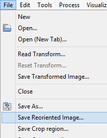
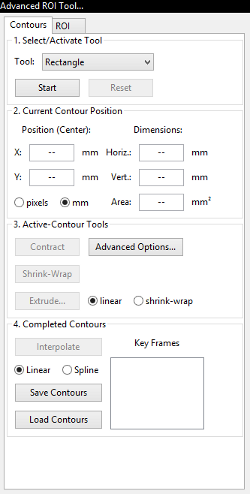
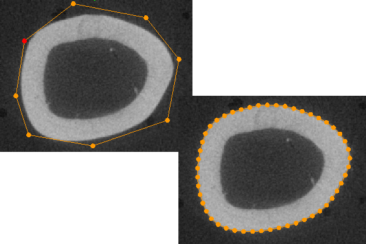
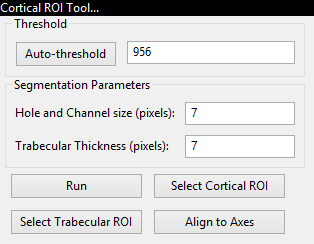
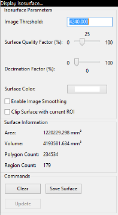
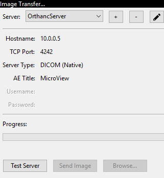
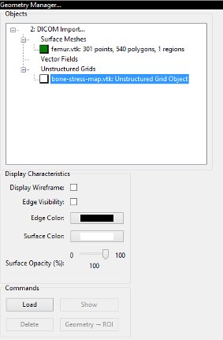
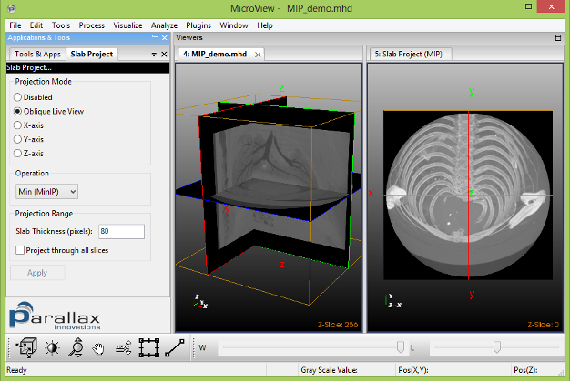
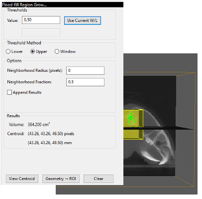

Tools and Plugins
This section describes the various extension plugins which are available for MicroView.
 Volume Rendering Tool
Volume Rendering Tool
Overview

Note
MicroView 2.5.0 features GPU-acceleration and improved level of detail rendering for most volume rendering functions.
MicroView's volume rendering tool can be used to produce stunning photo-realistic 2D semi-transparent representations of 3D image data by one of three raycast techniques. Raycast volume rendering is especially common in the medical imaging community where three dimensional volume data is easily available. To understand raycasting, think of voxels within a 3D image as possessing a density which corresponds to the graylevel value of the voxel. Imagine that for each pixel in the rendered image scene, a ray is drawn from the observer's eye, through the image pixel, then through the entire 3D image data set. Each ray will intersect a number of voxels before leaving the 3D image data. For each image pixel in the rendered scene, a color is determined by accumulating information derived from the intersecting voxels along the corresponding raycast ray. In particular, for each voxel in the 3D image data, the "density" or graylevel value of the voxel will be transformed into a corresponding voxel color and transparency. This color and transparency information will be combined, according to a raycast function to determine the final pixel color in the image scene.
MicroView currently supports three styles of raycast volume rendering:
- Isosurface Rendering - a raycast method where surfaces of similar density objects are rendered, and the remaining materials are hidden. For this rendering mode, a density threshold value must be selected that defines the surface, and the color of the surface selected.
- Maximum Intensity Rendering - a method where the color of the densest object along each raycast path is used to determine the final color of each pixel. This method is particularly useful to extract, e.g. contrast-enhanced vessels, or bone from images.
- Composite Rendering - a general raycast method, which gives the greatest level of control over the raycast scene.
MicroView's Rendering Interface

MicroView's volume rendering interface allows the user to control the type of rendering to generate and the parameters that will be used to generate the rendering.
The interface consists of the following elements.
- A graphical view that presents the image histogram, the opacity and color ramp and a representation of the LUT. The view can be controlled in the same fashion as the histogram or 2D profile plot windows. Additionally, this view contains a number of control points connected by a line. These control points are represented by either a blue (inactive) or red (active) dot and can be manipulated as outlined below.
- Control Point Settings group. These controls allow the user to fine tune the specific values that are used for each control point in the opacity and color ramp.
- A drop down box that contains a number of rendering presets. These
presets have been designed to produce a good quality rendering in
specific circumstances. There are two presents currently.
- Bone - sets the threshold at the Bone HU value specified in the volume.
- Soft tissue/Bone - uses the composite rendering method to generate an image that will accurately represent both soft tissues and bones. The preset values have been chosen using the calibrated HU values for bone and soft tissues.
- A pair of drop down boxes that are used to select the rendering mode to use, and the quality of the rendering to generate. The low quality rendering can be used to rapidly evaluate whether the chosen parameters will generate the desired image or not as the rendering is produced much more rapidly. Once the parameters have been roughly determined, the high quality rendering can be used to fine tune the results.
-
A group of buttons that provide the following functionality:
- Save - saves all of the parameter settings to file for use at a later time or on another system.
- Load - loads the parameter settings from a file generated using the Save function above.
-
Reset - Resets the histogram view and all of the associated parameters to the default values for the selected rendering function.
- Isosurface - the threshold value is set in the middle of the grayscale range of the volume.
- Maximum Intensity Projection - three regions equally spaced in the grayscale range of the volume. The first region covers the smallest values and has an opacity of 0. The second region covers the middle third of the values and is a ramp from an opacity of 0 to an opacity of 1. The final region covers the highest values and has an opacity of 1.
- Composite - a ramp starting from the smallest grayscale value in the volume and an opacity of 0 to the largest grayscale value in the volume and an opacity of 1. There is a third control point at the middle grayscale value.
The interface is reset whenever a new image is loaded into MicroView.
-
Update: generate the volume rendering using the current settings. Manipulating the volume (rotation, slicing, magnification) has the same effect.
Using the Volume Renderer Tool
- Select
Visualize→Render Volume...from the MicroView menu to open the volume rendering tool window. - Select the style of volume rendering desired. Composite rendering offers the greatest control over the display, but is the slowest form of rendering. MIP rendering displays a maximum intensity projection of the currently loaded image data. Isosurface rendering displays only the surface of objects, and is most useful for rendering bone images.
- Change the location of the controls points if desired, to achieve
the appropriate rendering result. The control points are chosen
using the left mouse button and will change from blue to red to
indicate that they are active.
- Isosurface - there are two control points that are vertically connected. These control points represent a threshold. All of the values above the threshold will be rendered. The two control points are always at the same graylevel.
- Maximum Intensity Projection - there are four control points, of which two can be manipulated by changing the graylevel value where they are located. The opacity values are fixed for all of the control points. The two end points are fixed. The first end point is at the lowest graylevel value in the volume and has an opacity of 0. The second end point is at the highest graylevel value in the volume and has an opacity of 1. The two control points in the middle of the histogram can be moved back and forth to change their graylevel position, and thus the location and slope of the ramp function.
- Composite - the composite rendering function is the most
complicated and begins with three control points (two end points
and the mid-point) and a ramp function from an opacity of 0 to
an opacity of 1 as outlined above. The end points are fixed at
the appropriate graylevel positions, but can have their opacity
changed. There are a number of different manipulations that can
be performed on the control points.
- Adding a control point - move the mouse pointer over the line that does not have an existing control point and click the left mouse button. A new point will appear at that location and will be active as indicated by the red coloration.
- Deleting a control point - select any existing control point by clicking on it with the left mouse button. The point will be marked active using the red coloration. Delete the point by pressing the "Del" key on your keyboard.
- Changing the opacity - select any existing control point by clicking on it with the left mouse button. By holding the left mouse button, it is possible to drag the control point up and down in the graphical view to change its opacity value. It is also possible to change the opacity of the currently selected control point by typing a value into the Opacity text entry box.
- Changing the graylevel position - select any existing control point by clicking on it with the left mouse button. By holding the left mouse button, it is possible to drag the control point left and right in the graphical view to changes is graylevel position. It is also possible to change the graylevel position of the currently selected control point by typing a value into the Position text entry box.
- Change the color that each surface will appear by using the color
editor. Begin by selecting any control point by clicking on it with
the left mouse button and noting that its color changes from blue to
red. The color can then be edited using either the sliders on the
color bars or by entering a value in the appropriate text entry box.
How the color change is applied depends on the type of rendering
that is being generated.
- Isosurface - all pixels above the specified threshold will be colored using the selected color.
- Maximum Intensity Projection - the pixels above the active control point will be colored using the selected color and the ramp function that joins the active control point to the next larger graylevel control point.
- Composite - same color treatment as the Maximum Intensity Project noted above.
- Select quality of rendering. Choose "low" quality to render rapid, lower quality images. These low quality renderings can be used to quickly evaluate the results of any changes that are made to the parameters before generating the more time consuming high quality renderings. Choose "high" quality once opacity, and color tables have been correctly set, in order to render at the highest quality.
- Click the Update button to update the output display whenever the rendering parameters have been adjusted. Manipulating the image by rotation, slicing or magnification will cause the output display to be updated.
- Click the Reset button to restore the opacity and color transfer functions to their original default values.
- Use the Save and Load buttons to save and load the parameter settings.
- Use the "Enable volume picking" checkbox to enable or disable volume picking: When enabled, the middle mouse button can be used to interactively adjust cropping dimensions that will be applied to the rendered image. When disabled, picking is disabled and MicroView will not allow the rendered volume to intercept mouse clicks and drags.
Additional MicroView Tools
MicroView has a number of additional features bundled into application plugins. Some of the core plugins are described below.
Reorient Image

As discussed in earlier sections of this help guide, MicroView can
perform arbitrary axis multiplanar reformatting of 3-D image data.
Reorienting the displayed image planes is performed on-the-fly without
actually adjusting the underlying image. To actually save the image
reformatted along new axes, a specific image reorient tool in MicroView
is used. To save a reoriented image, first center and orient the cut
planes in the 3-D view pane to represent the axes of the desired output
image. Once satisfied with the displayed axes, select
File → Save Reoriented Image... to save the reoriented image to a
file.
 Standard ROI Tool
Standard ROI Tool

Note
MicroView 2.5.0 features spherical ROI objects as well as the ability to rotate primitives.
MicroView's ROI tool can be used to select a 2D or 3D region of interest in the image for further analysis. It compliments the manual ROI selection technique, using the 7 and 8 keys. Use this tool when a ROI of a specific size or position is needed.
- Activate the ROI tool by selecting
Standard ROIfrom theTools and Applicationssidebar on the left hand side of the main window, or by selectingTools→Standard ROI...from the main menu. - Choose Parallelepiped, Elliptical Cylinder or Spherical ROI shapes for the selected analysis region (Box, Cylinder and Sphere options, respectively).
- Choose a unit of measurement -- either millimeters or pixels.
- Adjust the size and position of the selected analysis region: Either manually enter coordinate values into the appropriate text boxes (hit enter key to accept changes), or adjust the sliders to the right of each entry box to choose the bounds of the region of interest.
- Alternatively, you can resize and reposition a rectangular ROI by
interacting with the faces of the yellow box in the main 3D
viewport. Position the mouse over any surface, then click and drag
the middle mousebutton to resize the ROI along the axis parallel
with the ROI face you clicked upon. Holding the
shiftkey down, while performing the same operation will translate the ROI along the same axis. - Press the
Link X/Ybutton to enable or disable linking size changes in X and Y axis. - Check the
Link Image Planeradio button to enable rotation of ROI primitives. Rotate image planes in order to take advantage of this feature.
 Advanced ROI Tool
Advanced ROI Tool

Advanced ROI Tool is used to generate a 3D region of interest (ROI) from a series of stacked 2D ROIs. The purpose of this tool is to allow the user to manually select an arbitrary ROI. Once an advanced ROI is selected, analysis such as calculating mean and standard deviation, generating an isosurface, and calculating BMD can be performed.
- Activate the
Advanced ROITool by clicking on theAdvanced ROIbutton on theTools and Applicationssidebar or by selectingTools→Advanced ROI...from the main menu. - Choose one of the four options (Rectangle, Ellipse, Polygon and Spline) for the shape of the 2D ROIs. Click the Start button to begin drawing on the 2D image of your choice.
- At any time, click the Reset button to delete all 2D and 3D ROIs. This action may not be undone.
- If Rectangle or Ellipse is chosen, position the mouse on the 2D image, press the left mouse button and drag the mouse. To adjust the size of the 2D ROI place the mouse on the upper left corner or bottom right corner of the 2D ROI, press the left mouse button and drag the mouse. Release the left mouse button when the proper size is reached. To adjust the position of the 2D ROI place the mouse on the bottom left corner or top right corner of the 2D ROI, press the left mouse button and drag the mouse. Release the left mouse button when the 2D ROI is positioned properly. Click the left mouse button outside of the 2D ROI to re-select and inside of the 2D ROI to drag it around. Push the plane with middle mouse button and start to draw another 2D ROI.
- If Polygon or Spline is chosen, we enter free-hand mode. Click the left mouse button on the 2D image to choose points. The points will be connected automatically with line segments. To close up the ROI circle, click on the first point. To delete a point, select that point by clicking on it with the left mouse button the delete key. After you 2D ROI is closed, it can be edited by dragging a point to re-position it, clicking on a line segment to add a point, clicking inside the ROI to drag the whole ROI, or clicking outside of the ROI to erase the ROI and start all over.
-
When using a Polygon geometry, the contract and shrink-wrapping operations are available. Shrink wrapping fits the current 2D ROI to features in the image. To use the shrink-wrapping operation, first, create a 2D ROI in Polygon mode, next, click Shrink-Wrap. If the resultant 2D ROI is undesirable, delete some points and try again.

You can fine-tune several parameters that affect the shrink-wrapping operation. Click Advanced Options... to access these options. - Tension - the rigidity of the 2D ROI. Increase for a more rigid 2D ROI. Decrease for a smoother 2D ROI. - Edge Attraction - the strength of the attraction that the edges in the image have on the 2D ROI. Increase to speed up the calculation. Decrease to enhance accuracy. Increasing too much will cause the 2D ROI to become attracted to distant features. - Resolution - the number of nodes to place per 10 pixels. Increase for greater accuracy. Decrease to speed up the calculation. - Blur Radius - the Gaussian kernel used to calculate image force. Increase for larger capture radius. Decrease for greater accuracy. The automatic option causes MicroView to base the radius on the size of the 2D ROI: a larger 2D ROI results in a larger blur radius. The manual option causes MicroView to use the value entered. When using the manual option, increasing too much will cause the 2D ROI to become attracted to distant features.
- No. Of Frames - described in the next section. Defaults restores default values; Cancel exits without making any changes; and OK exits effecting the changes. Contract is another way to fit a contour to the features in the image. In this case, the 2D polygon outline is drawn outside of the object to surrond, and the polygon shrinks until a preset threshold value is reached. You can fine-tune several parameters that affect the shrink-wrapping operation. Click Advanced Options... to access these options. - Resolution - the number of nodes to place per 10 pixels. Increase for greater accuracy. Decrease to speed up the calculation. - Threshold - the threshold value, in calibrated units, that represents the object being segmented.
-
2D ROI can be extruded from one frame to another. To directly copy the current 2D ROI to another frame, select the linear radio button in the
Active-Contour Toolspanel. To incrementally fit the 2D ROI using the shrink-wrapping operation described above, select the shrink-wrap radio button. Note that shrink-wrapped extrustions can only be performed in the Polygon mode. Now clickExtrude. One can specify the extrustion distance either graphically or by entering a positive or negative number of millimeters. When shrink-wrap is selected, the extrusion is performed using the shrink-wrapping operation incrementally. To contol the number of frames between shrink-warpping, click Advanced Options... and modify theNo. Of Framesfield. Increase for faster execution. Decrease for more accuracy. Increasing this parameter too much may actually increase execution time: the more the incremental slices differ, the longer the calculation will take to converge. - Note that for each user-drawn 2D ROI there is a number in the Key Frames section. This number indicates the image slice index where the 2D ROI was drawn. Click the Interpolate Contours button to generate 2D ROIs on every empty slice between the minimum and maximum Key Frames. There are two options for the interpolation: Linear or Spline.
- After the interpolation, one can edit any frames to fine-tune the ROIs. Every edited frame will become a Key Frame in addition to the existing Key Frames. Clicking on the Interpolate button the do the interpolation again using the updated Key Frames.
- At any time, click the Save Contours button to save the stack of 2D ROIs. Later, the stack of 2D ROIs can be loaded by clicking the Load Contours button.
- To generate a 3D ROI from a stack of 2D ROIs and display the 3D ROI,
navigate to the 3D ROI tab and click the Generate 3D ROI button.
Click on the
ROI On or OffRadio button to show or hide the 3D ROI. - Press the
Save...button the save the 3D ROI, which can be used in future by the Manage Geometries. - Click the X button in the top right hand side of the notebook tab to close this tab and remove ROIs from all image panes. This action may not be undone.
 Cortical Bone ROI Tool
Cortical Bone ROI Tool

When applied to a CT image of a bone, this tool can be used to select a ROI corresponding to either the cortical shell or the trabecular space of the bone. The tool uses a series of morphological operators to semi-automatically select cortical bone components. The trabecular space is found within the cortical bone region. Once the cortical bone components have been selected, they can be converted to a ROI for use in the Advanced Bone Application and the image planes can be rotated so that the axes of the planes are aligned with the principal axes of the cortical bone.
Before running this tool, the user needs to either select a ROI to be used for segmentation, or the tool will automatically select the entire image and perform segmentation on the resulting ROI.
Activate the ROI tool by selecting Cortical ROI from the
Tools and Applications sidebar on the left hand side of the main
window, or by selecting Tools → Cortical ROI... from the main menu.
- The gray-level threshold may be either entered manually or determined automatically by using the Auto Threshold button. The result of automatic thresholding is determined using the "Otsu" method
- The "Hole and Channel Size" specifies the largest size, in pixels, of any holes and channels through the bone that you would like the algorithm to fill. The default value is 7 pixels.
- The "Trabecular thickness" specifies the largest size, in pixels, or trabeculae that you would like the algorithm to remove from the ROI. For bones where the cortical thickness is similar to the trabecular thickness, the segmentation algorithm may also eliminate the cortical bone making it less suitable for use in these circumstances. The default value is 7 pixels.
- Use the Run button to segment the cortical bone contained in the ROI.
- Use the
Segmentation→Cortical ROIbutton to convert the segmentation results (highlighted in green) to a ROI (highlighted in yellow) that can be used for analysis operations in the Advanced Bone Application. Select theSegmentation→Trabecular ROIbutton to invert the ROI selection -- i.e. select the trabecular bone region as a ROI. - Use the Align to Principal Axes button to rotate the axis planes to be aligned with the principal axes of the segmented cortical bone
 Isosurface Tool
Isosurface Tool

MicroView's isosurface tool can be used to extract a surface from a 3D
image that corresponds to a user-defined gray-level value. Activate the
tool by selecting Visualize → Isosurface...from the main menu. To
use the tool:
- Select an image threshold value in the
Image Thresholdtext box. - Select a quality factor using the
Surface Quality Factorslider. This factor is used to downsample the image prior, to extracting an isosurface. Use a small value (e.g. 0.25) initially to extract a course surface, then refine the surface by increasing the factor to 1.0. The memory consumed by this plugin increases quickly for large surface quality settings, as does the size of the final surface mesh. Use large values sparingly. - Select a decimation factor by adjusting the appropriate slider. MicroView will attempt to reduce the surface complexity of the final isosurface by this user-defined amount. Setting a value of "0.1" means that MicroView will attempt to reduce the surface polygon count by 10%, while minimizing the impacting on surface topology, surface area and volume contained within the isosurface. A value of "0" indicates that no decimation shall be attempted, while values approaching "1" will significantly impact the quality of the final surface.
- Optionally enable image smoothing and image clipping by checking the appropriate checkboxes. If smoothing is enabled, MicroView will perform a Gaussian blur on the image prior to generating an isosurface. This is used commonly to reduce image noise, and hence remove spurious surface elements from the final surface. This will have an impact on the accuracy of the Area and Volume measurements displayed in the plugin GUI.
- Press the Update button to display/update the isosurface. Press the Clear to hide the surface.
 Image Resample Tool
Image Resample Tool
MicroView's Resample Image plugin can perform image resampling on a loaded
image. Image resampling changes the dimensions of the image and can both
increase or decrease image size. The resample factor may be specified as
either a single number, in which case image resampling is done isotropically,
or as a list of numbers, in which case MicroView resamples the image differently
for each dimension. A typical use for this plugin is to isotropically downsample
images so that memory and disk storage are reduced. To activate the plugin,
select Process → Resample Image... from the main menu. Then:
- Enter a downsampling factor (or factors) in the edit field.
- Press the Resample and Save... button to resample the image and save it to disk.
 Image Transfer Tool
Image Transfer Tool

MicroView can transfer a loaded image to a compatible DICOM viewing station. It can also browse and download into memory images from a number of remote viewing platforms. Certain stations can be automatically detected, while others must be manually configured.
Note
MicroView requires Zeroconf
to automatically detect image servers on your network. This software is
automatically available on OS X computers, and is bundled with the MicroView
installer software on Windows computers. For Linux computers, MicroView
communicates with the "Avahi" daemon through a compatability library. Make sure
that dnssd_compat is installed (e.g. on Ubuntu, run sudo apt get libavahi-compat-libdnssd1)
To activate the tool, select Tools → Dicom Transfer... from the main
menu.
- Enter the hostname and port number of the destination server in the appropriate text entry boxes. Optionally select a DICOM application name, for servers that require communication from a specific application name. For servers that do not require a specific application name, leave this field blank.
- Check with your DICOM vendor, or user's manual to determine what the AE title should be. Enter values for Patient Name, Patient ID, Study ID and Study Description, if needed. In some cases MicroView may be able to provide default values based on the image loaded.
- Finally, hit the Send Image button to transfer the image.
 Manage Geometries
Manage Geometries
Note
MicroView 2.5.0 features an overhauled interface for handling point, surface and vector data. General purpose unstructured grids and vector fields can now be displayed in MicroView. Greater control over viewing options have also been added.
This tool is used to display and manipulate 3D surface geometry objects. Surface geometries can be read from a variety of common 3D file formats, such as STL, PLOT3D and PLY formats. Loaded geometries may be superimposed on top of the current 3D image data. Surface characteristics, such as color, opacity, and whether the object is displayed as a closed surface or a wire mesh can be adjusted for each loaded surface. Finally, each surface may be selected and assigned as the default ROI for MicroView. This permits advanced ROI selections to be saved and restored, as well as allowing third-party tools to be used to generate ROI objects.

- Activate the "Manage Geometries..." plugin by selecting
Visualize→Manage Geometries...from the main menu. - Click the Load button to select a geometry file to load in. Multiple files can be loaded sequentially. Each surface object filename will be displayed in the list box above the Load button.
- Click the Show or Hide button to show or hide a selected geometry.
- Click the Delete button to remove a selected geometry from memory.
- Click the
Geometry→ROIbutton to assign the currently selected surface as the default ROI for MicroView. - Customize the color of a selected surface by clicking on the surface's color button, and adjust surface characteristics of the selected surface by checking or unchecking the Display Wireframe button.
- Customize the opacity of the selected surface by adjusting the opacity slider. A value of zero means the surface is completely transparent (e.g. invisible), while a value of 1.0 indicates the surface is completely opaque.
 Image Information
Image Information

Note
MicroView 2.5.0 has fundamentally changed how image data is represented internally. These changes facilitate converting data between different image formats, while maintaining meta-info in DICOM-compatible format. See the "DCM" page for DICOM-related information.
Overview
This plugin displays properties about the currently loaded image and
general display settings of MicroView, such as background colour, active
units etc. The tool can be activated by selecting
Tools → Image Information... from MicroView's main menu. Image and
system properties can be viewed in one of two basic property display
modes: a general mode presents as much information as possible in
loosely defined categories; a DICOM-specific mode presents DICOM tags
(or equivalents) for the image.
Property Display Modes

To view general image properties and viewing options, select the column-like icon at the top of the plugin. To view instead DICOM tags associated with this image, select the DCM icon. The third icon (a silhouette with minus sign) can be used to anonymize DICOM tags associated with the image.
Property Filters
Image properties can be filtered by adding filter terms in the search box at the bottom of the plugin. Filter words are case insensitive and apply to both property name and property value in both general and DICOM property display modes. You can filter on more than one search string by separating them by spaces.
General Information
Some fields are specific to vff format images, especially those generated by the Locus reconstruction software package: Air and water parameters, for instance, correspond to calibration values entered using the CT calibration tool in MicroView's CT Toolbox plugin. Similarly, the bone parameter value (measured in Hounsfield Units), is also a calibration value, determined as part of the Locus image reconstruction process.
Some image information values (title, subject, air, water and bone values) may be edited by clicking on the value field in the image information box. Press the Enter key to accept the new value, or press the Esc key to cancel your edit session. Editing values in this way does not modify the contents of the original image file on disk -- you must explicitly save the image in order to preserve your changes.
Slab Project
The Slab Project tool accumulates images from a collection of image slices surrounding the currently image planes and displays them using one of a variety of different functions: minimum, maximum, mean and sum. The tool can operate on either on a finite slab of images or the entire collection of data. It can produce oblique, so-called 'Live View' images, or produce a new static image as it's output.
Note
This tool serves as a replacement for the 'MIP Image' tool found in older versions of MicroView.

Using Slab Project
- Activate the Slab Project plugin by selecting
Visualize→Slab Project...from the main menu. - To enable slab projection, choose 'Oblique Live View', 'X-', 'Y-' or 'Z-' axis projections. The first option will produce output in currently selected 3D viewport, while the remaining three options will generate a new output window.
- Select an accumulation function: 'Min', 'Max', 'Mean' or 'Sum'.
- Click the
Applybutton to generate the slab projection. For 'Live View' mode, interacting with the 3D viewport slice position will change the appearance of the slab. - Select
File→Save Snapshot...to save a snapshot of the slab image. Snapshot images are always 8-bit images, and take advantage of the current window/level settings in the slab project window.
 CT Toolbox
CT Toolbox

The CT Toolbox plugin consists of a collection of tools, useful for day-to-day analysis of CT image data. The plugin can be used to:
- perform Hounsfield image calibration of GE preclinical scanner data
- perform image unwarp and bright/dark field corrections
- remove rings interactively from a 3D CT dataset
- determine modulation transfer function (MTF) for an imaging system using a standard "slanted-edge" test.
Note
This plugin is designed to supersede the original CT Calibration Tool plugin, found in earlier releases of MicroView.
This plugin allows the user to measure three different ROI's within an image, and save/restore these values. The purpose of saving three sets of ROIs is so that the reconstruction software can automatically determine air, water and bone calibration constants.
- Activate the CT Toolbox plugin by selecting
Tools→CT Toolbox...from the main menu. - Define a ROI with only air by using either the 7/8 keys,or by
selecting a ROI using the ROI plugin
(
Plugins→ROI Selection Tool...on the MicroView menu) and click the corresponding Save button. Similarly do the same for water and bone. - Once the ROI's for air, water, and bone have been selected and the settings have been saved, click one of the Load buttons and the corresponding ROI will appear.
 Make Movie
Make Movie

Note
The Movie Maker plugin now uses OpenCV to generate movies in a variety of different output formats. The specific codec list available is platform dependent.
This plugin allows the user to make a movie of a sequence of screen
snapshots, while the loaded image is either rotated 360 degrees about an
axis, or sliced along a cutplane. Sequences can be accumulated together
to build more complex movies. Individual orientations can also be
controlled by using stationary snapshots. Select
Visualize → Make Movie... to load the movie maker.
Next:
- Select the type of animation desired in the Animation Type drop-down menu. The X/Y/Z Rotation entries correspond to animations of the image scene while rotating the image about the selected axis. The X/Y/Z Slicing entries generate an animation of the image scene while slicing through the entire image along the selected image axis.
- Select from one of a number of movie file types.
- Enter the number of snapshot images to take while generating a movie sequence. For rotation-type movies, this number will determine how many degrees to rotate the image scene between each image and the next.
- Press the
Add sequencebutton to start the movie making process. For the first sequence only, you will be prompted to select an output filename. - Additional sequences can be added to the movie by repeating the above steps until the entire movie is produced.
- Finally, close and finish generating the movie by clicking the
Finishbutton.
 Point Picker
Point Picker

MicroView's point picker tool is used to make a set of landmark
measurements on an image, and to save these measurements to disk. Start
the tool by selecting Plugins → Point Picker... from the main menu.
Once loaded:
- Position the mouse cursor over a point of interest in either 3D or 2D viewports
- Press the Space key to place a marker at the current mouse position
- Press the Accept button, or Enter key, to permanently accept the marker position, or reposition the mouse and hit the Space key again to move the marker
- For each marker, the 3D coordinate will be recorded in the table contained in the measurement tool. Additional column space reserved for adding comments to each line
- Press the
Save...button to save the current marker positions to disk - Captions for each landmark can be optionally displayed floating beside each landmark
- Additional support for the display of a rectangular-shaped ROI about each landmark is available
 Interactive Shell
Interactive Shell

From MicroView's interactive shell, images can be interrogated and manipulated easily. The toplevel python variable images is a list of images, indexed by each loaded images tab
number, which is displayed on each image's Viewer tab.
 Data Conduit
Data Conduit
The Data Conduit plugin allows loading image data from select IDL™ and Matlab™ data files. The plugin requires additional software to operate and will prompt and download the add-on software the first time it is used.
 Rescale Image
Rescale Image
MicroView's Rescale Image plugin performs simple linear transformations on pixel
values, that is, it can transform pixels by an offset and scale factor. The plugin can be
useful, for instance, in converting CT image data into Hounsfield units.
 Reconstruct
Reconstruct
Reconstruct.
 Flood-fill Region Grow
Flood-fill Region Grow
Flood-fill region grow.

 Image Math
Image Math
The Image Math plugin can be used to perform simple binary operations
on a loaded image. At a minimum, one image must be selected in the Image #1 dropdown
choicebox. Depending on the selected operation, the second dropbown choice box can be
used to either select a constant value or a second image. The plugin generates an output
image, rather than overwriting it's input arguments, and the name of this output image
can be selected in the Output → Name text box.
 Camera Info
Camera Info
The Camera and Transformation Info plugin displays information about MicroView's
3D viewport. The Camera section displays info about position and orientation of
the viewer within the 3D image scene. The Image section provides information about
how the 3D image is being sliced and transformed. The orientation information can be
saved and reloaded into MicroView, which allows scene layouts to be saved and restored
at a later time.